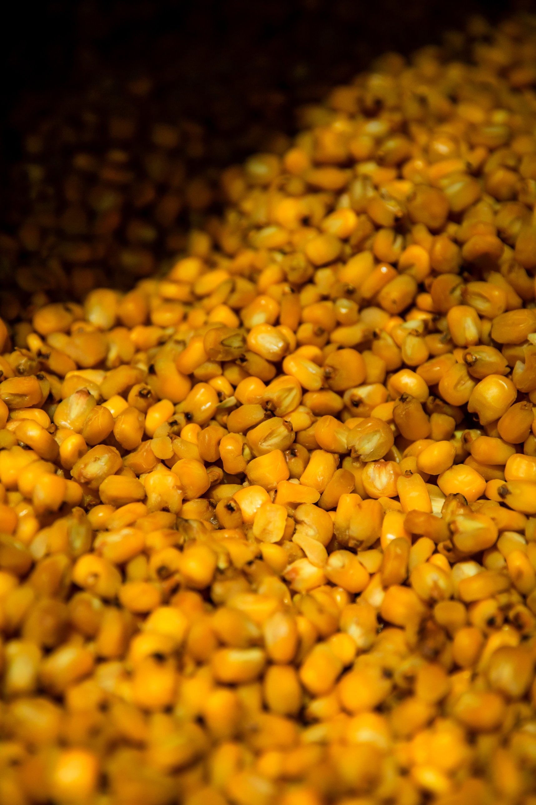
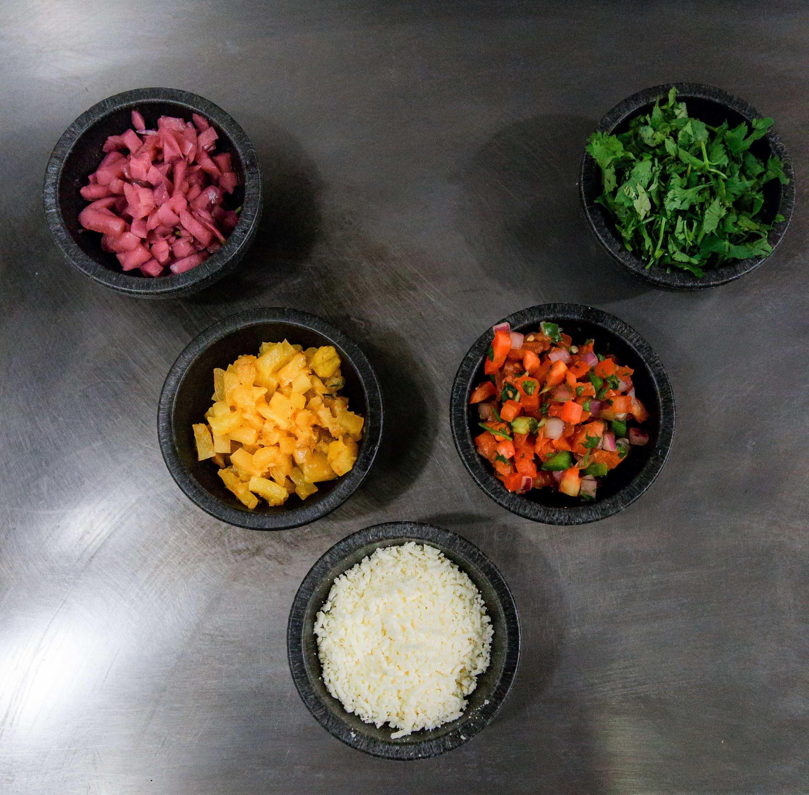
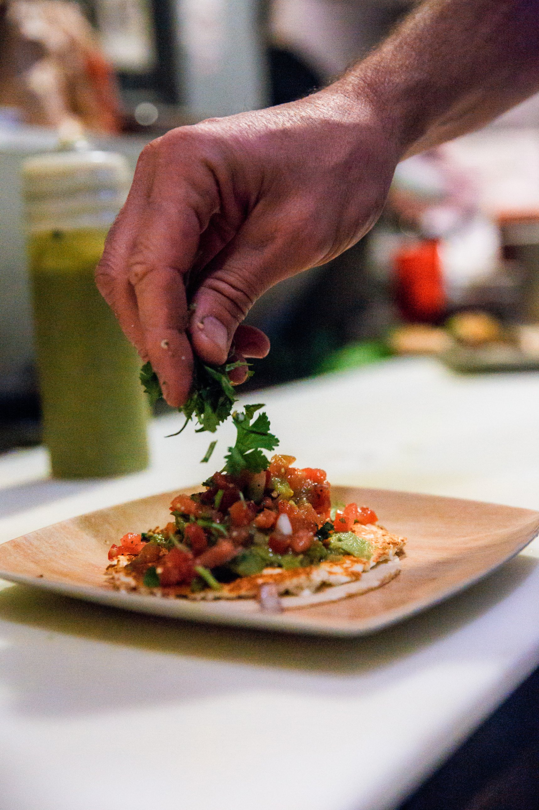
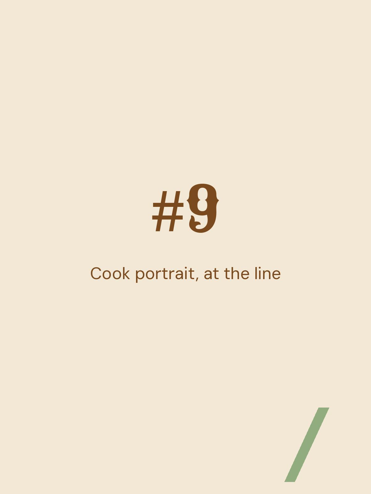
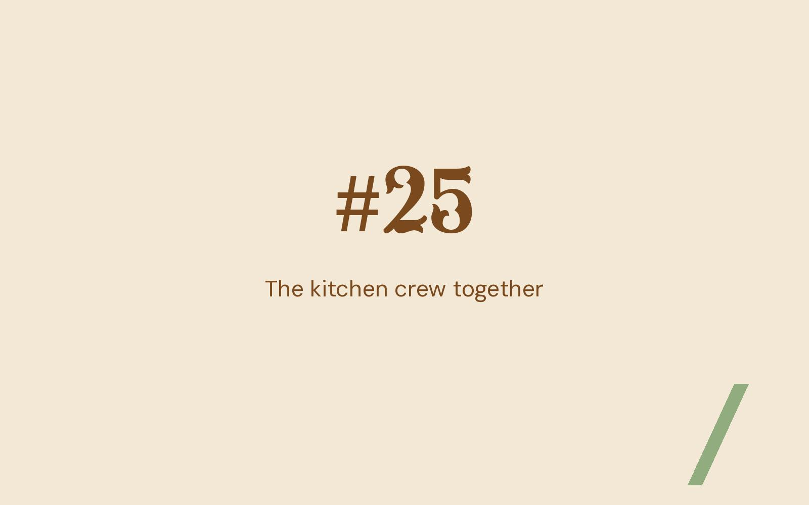
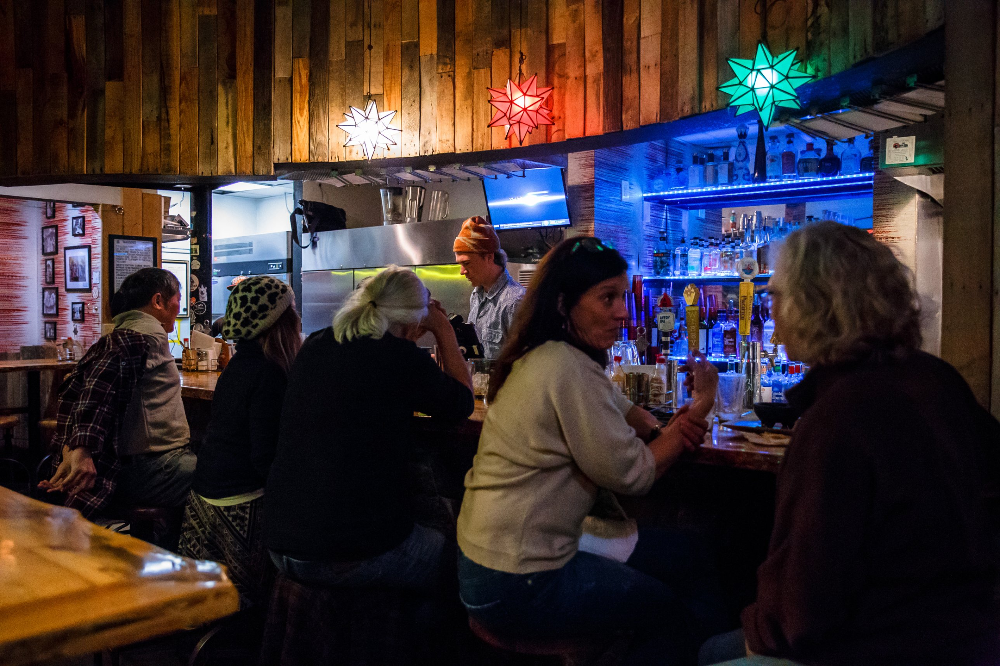
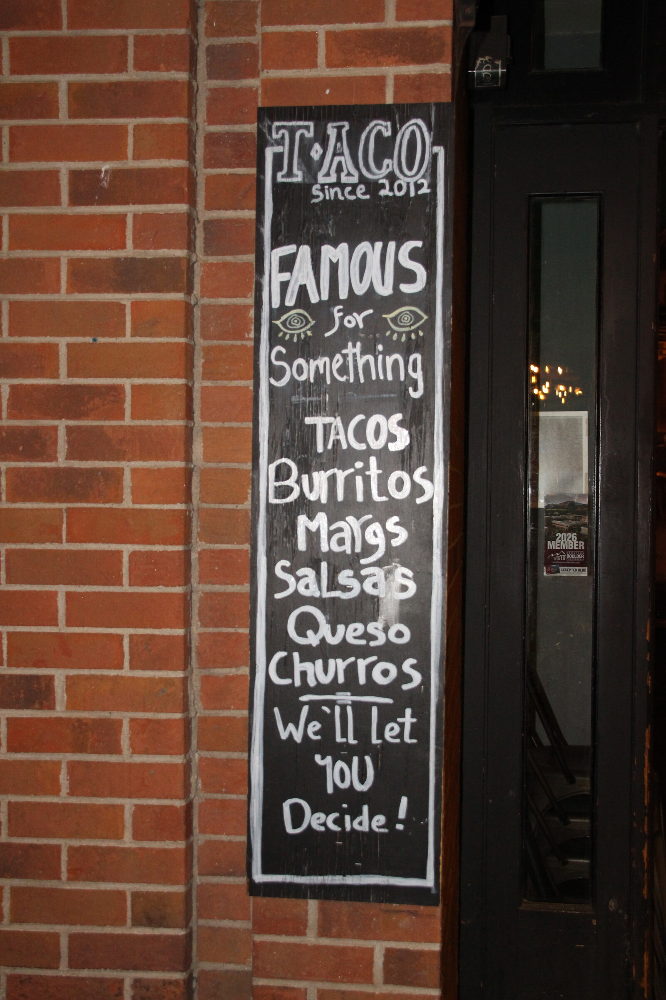
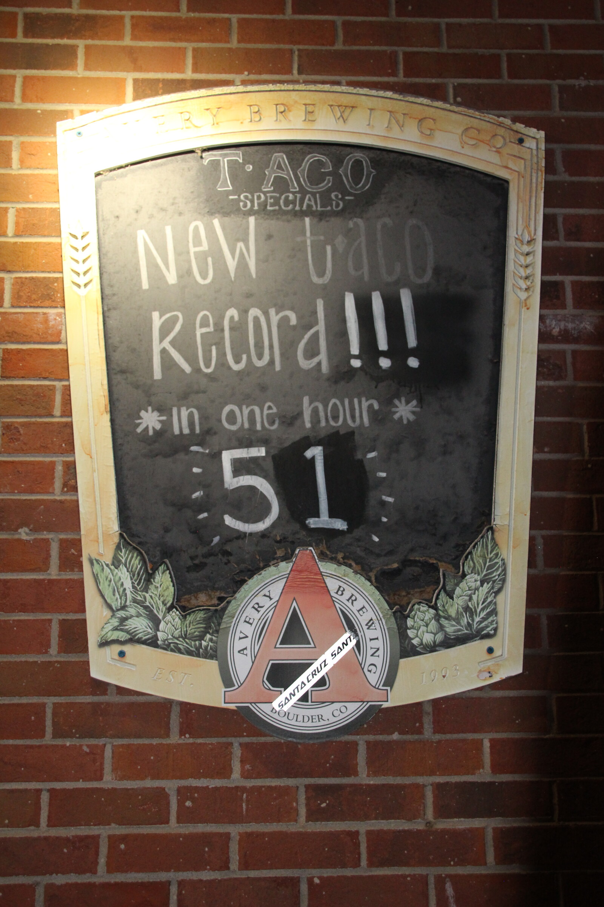
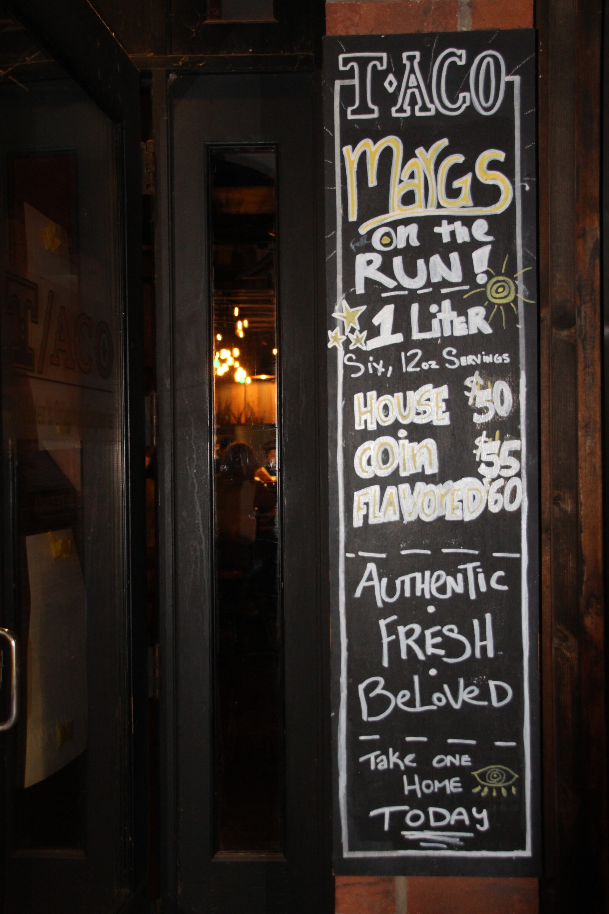
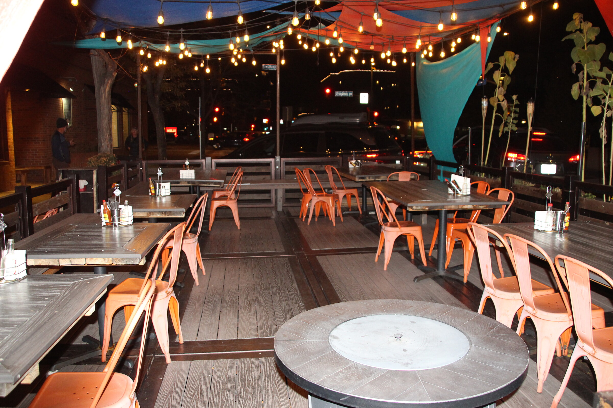

Come have a look for yourself.
1175 Walnut Street, Boulder. Open every day from eleven.
Location & hoursHave a look around
Everything here was shot in the restaurant, by us, on an ordinary day. Scroll in off the street.



Everything on the line is made the morning you eat it.The kitchen, every day








1175 Walnut Street, Boulder. Open every day from eleven.
Location & hours